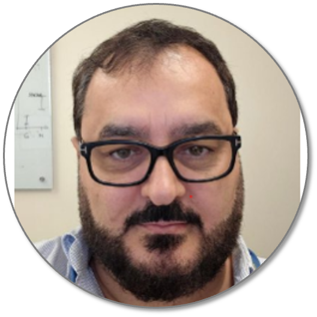
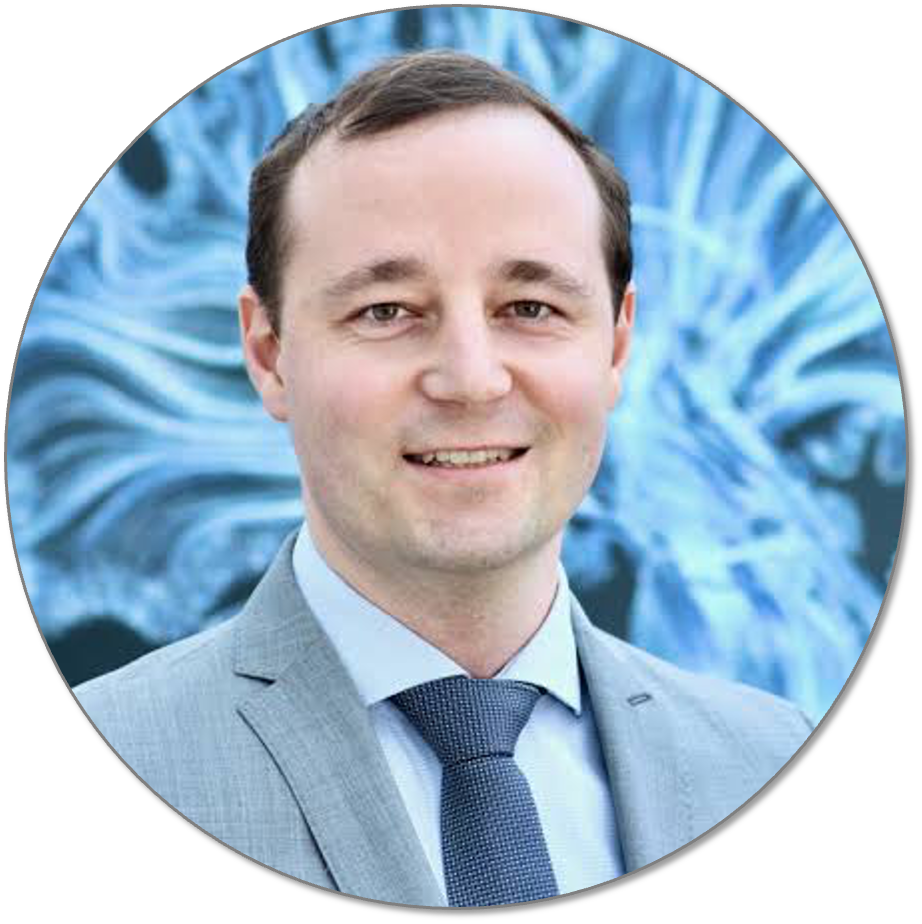

Featured
BigBrain Project Educational Lecture
Helen Zhou
Integrating Brain Imaging and AI: Applications in Neurological Disorders

Sievers Lecture in Computational Neuroscience
Kâmil Uludağ
From Group Averages to Precision Neuroimaging: Brain Function and Anatomy at the Individual Level
